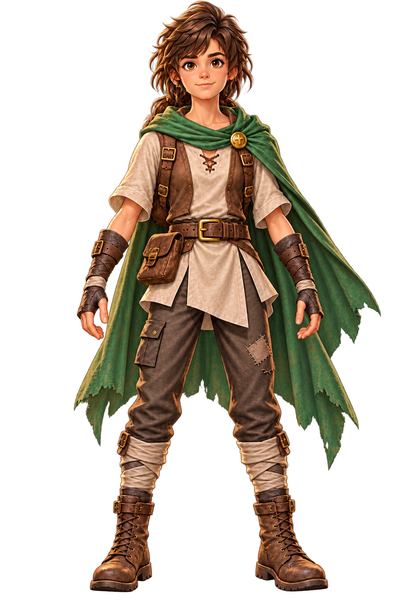
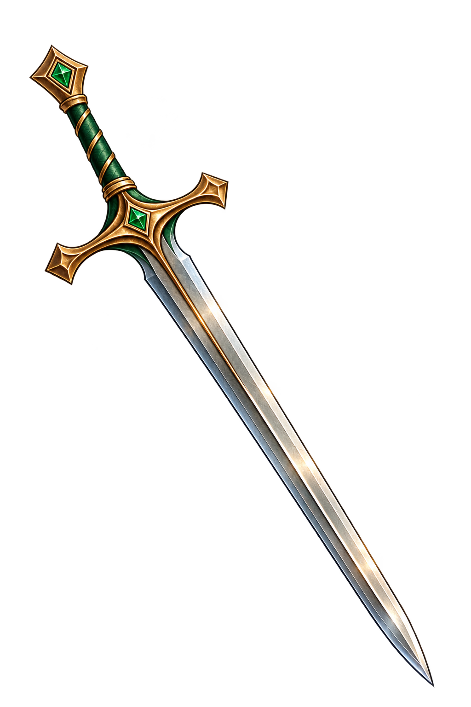
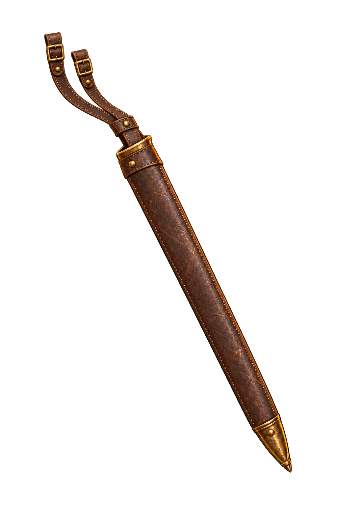
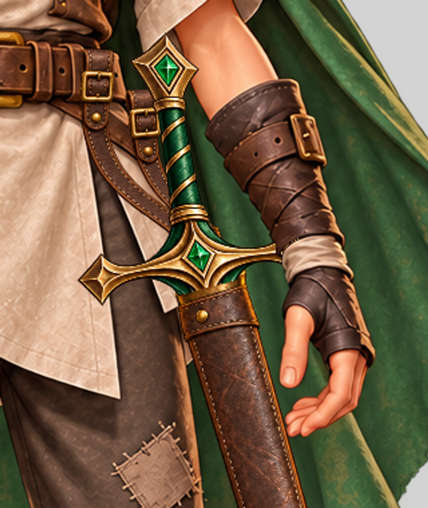
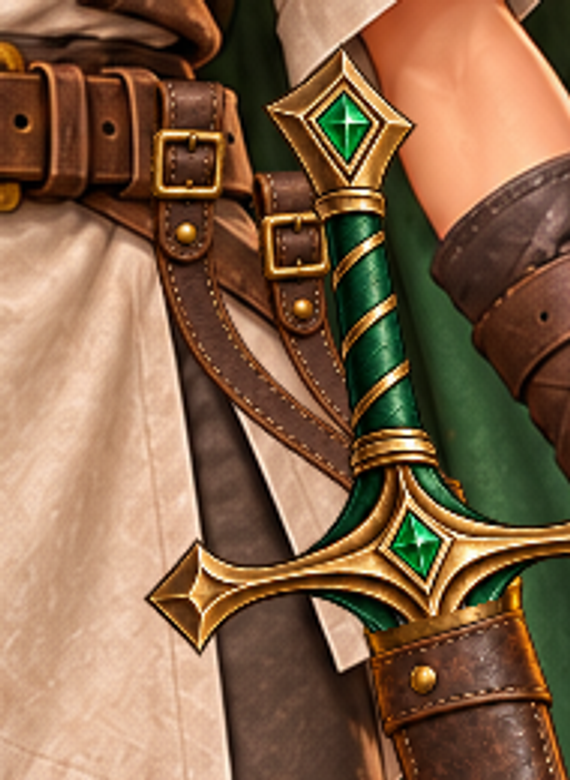
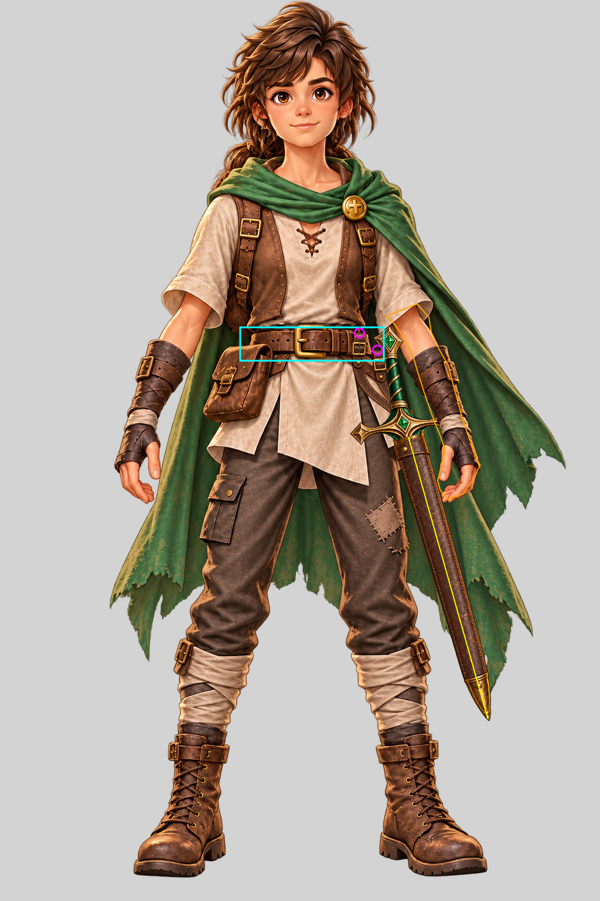
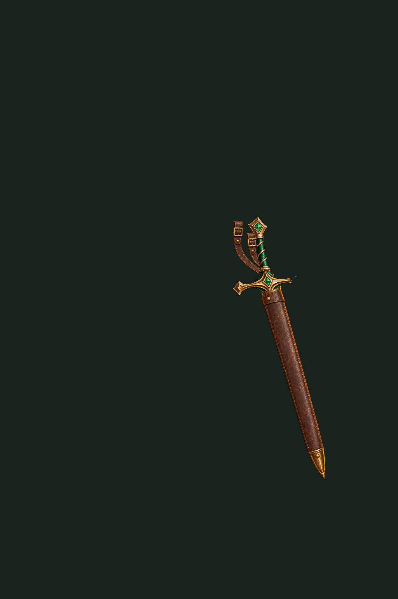

Encaixe e oclusão
- Bainha real de couro marrom com costura discreta, garganta/ponta em bronze; duas correias conectadas ao colar da bainha.
- Contato superior aproximadamente613,568 no cinto frontal direito e644,597 na extremidade descendente do couro. Não são âncoras da mão.
- Espada estética preservada mediante pixels originais de cabo/guarda, sem hilt redesenhado pelo gerador. Parte nua da lâmina removida sob a garganta; nenhuma segunda espada.
- Ponta832.70,1225.75, abaixo da garganta697,745, acima do chão1495. Eixo desce para a lateral direita, sem cruzar pernas ou bolsa esquerda.
- Guarda parcialmente atrás do antebraço. Máscara subtrai alpha somente do equipamento; refinamento local pela cor do HD evita apagar guarda sobre a capa verde. Nenhum pixel do HD entra no overlay.
- Mão aberta permanece original e livre; não se exige empunhadura permanente conforme DEC037.
- Aceite técnico visual pelo autor apenas para female_short_moss_medium; não extrapolado aos outros53HD. Carlos deve confirmar proporção, pontos de fixação e transição guarda/bainha.
Relatório de encaixe · Transforms / hashes · Receipt
SHA selecionado: 735000c62ddaee5214cfb895deae17685a1f2e1c0c642f3557e09879d90524f2










Tentativas rejeitadas do mesmo piloto
Attempt01: correias fora do cinto. Attempt02: corte prematuro na guarda. Ambas NEEDS_REWORK, preservadas.
01 · 02As outras três espadas não foram geradas nem processadas. Este review não ativa equipamento e não escreve saves.